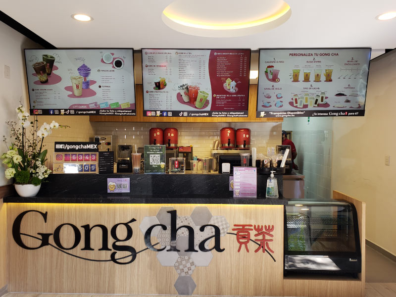
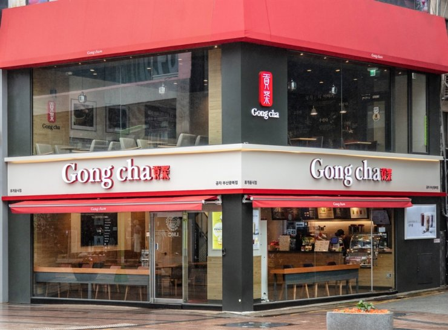

“Gong cha” es un término chino que significa el acto de ofrecer el mejor té al Emperador.
Representa los tés y bebidas de la más alta calidad, servidos solamente a la realeza.
Hoy, la empresa Gong cha se enfoca en el mismo principio de proveer productos premium a todos sus
clientes en todo el mundo. En Gong cha, prometemos inspirar al espíritu humano y crear felicidad
con una perfecta taza de té.
Gong cha comenzó en Taiwan en el año de 1996 por dos grandes amigos, Huang y Wu.
La peculiaridad de Gong cha era ofrecer un servicio personalizado con tés premium en una gran
variedad de recetas innovadoras y deliciosas. Gong cha se convirtió en el lugar favorito de sus
clientes y las noticias de la empresa comenzaron a extenderse de boca a boca. Sus productos de tan
alta calidad fueron incrementando su popularidad y, en 2006, Huang y Wu crearon la marca Gong cha y
abrieron su primer tienda en la ciudad de Kaohsiung, Taiwan. Gong cha se ha convertido desde entonces
en uno de los más conocidos proveedores de tés de alta calidad y ha florecido en todo el mundo.
En Febrero de 2019 Gong cha abrió su primera tienda en México, en la ciudad de Guadalajara. Gong cha México se ha puesto la meta de abrir 100 tiendas para el año 2025. El continuo desarrollo global de Gong cha no ha cambiado la misión de la marca de ofrecer bebidas de té de la mejor calidad. Nuestros valores centrales de calidad, innovación y servicio han hecho de Gong cha la mejor marca de Bubble Tea del mundo.
 Desde que se estableció en 2006, Gong cha se ha expandido a más de 15 países y tiene más de 1500 tiendas alrededor del mundo. Puedes encontrar Gong cha en Taiwán, Hong Kong, China, Malasia, Filipinas, Corea del Sur, Japón, Singapur, Tailandia, Macau, Cambodia, Brunei, Indonesia, Australia, Nueva Zelanda, Canadá, Estados Unidos y México. En 2009 Gong cha abrió su primera tienda fuera de Taiwán en Hong Kong, el éxito de Gong cha en este país fue muy importante y confirmó la aceptación de la marca fuera de Taiwán. En 2012 Gong Cha llegó a Corea del Sur y en menos de 2 años se abrieron 200 tiendas en Seul. Gong Cha continúa en prosperar en Asia y en 2014 fue votada la marca más popular de Corea.